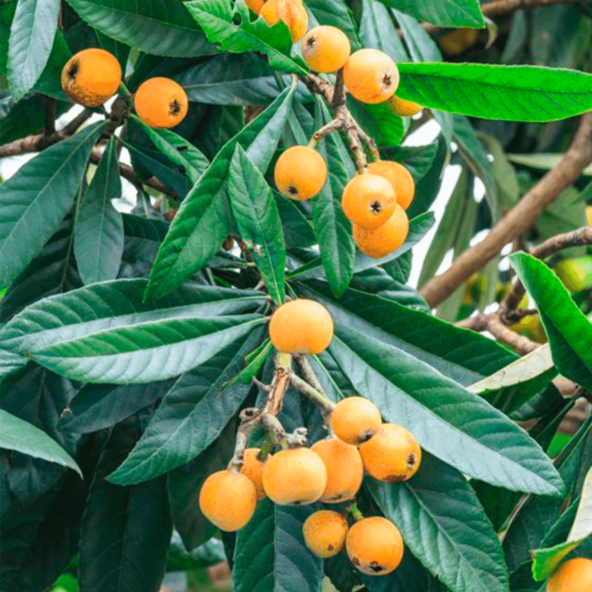

Ayuntamiento de Senés
JARDIN BOTANICO DE ESPECIES AUTOCTONAS DE SENES

Eriobotrya japonica

El níspero (Eriobotrya japonica) es un árbol perennifolio de tamaño medio, muy apreciado por su fruto dulce y por su valor ornamental. Aunque es originario de Asia, está ampliamente integrado en el paisaje mediterráneo.
Presenta un tronco corto y una copa densa, con hojas grandes, alargadas y de textura coriácea, de color verde oscuro. Sus flores son pequeñas, blancas y aromáticas, agrupadas en racimos, que dan lugar a los nísperos, frutos de color anaranjado.
El níspero es originario de Asia oriental, pero se cultiva ampliamente en regiones mediterráneas. Prefiere climas suaves y suelos fértiles y bien drenados.
En el entorno de Senés, es habitual en huertos y jardines, formando parte del paisaje agrícola y doméstico.
El níspero es un fruto rico en vitaminas, minerales y fibra, con propiedades digestivas y antioxidantes. Es muy apreciado por su sabor dulce y refrescante.
También se han utilizado sus hojas en infusiones dentro de la medicina tradicional.
El níspero simboliza la abundancia y la dulzura, al producir frutos en una época temprana del año.
También representa la adaptación de especies foráneas al entorno mediterráneo.
En Senés, el níspero ha sido cultivado en huertos familiares, siendo muy apreciado por su fruto.
Su consumo ha formado parte de la alimentación estacional, especialmente en primavera.
El níspero florece en otoño e invierno, mientras que sus frutos maduran en primavera.
El níspero es uno de los pocos árboles frutales que florece en invierno.
Su fruto madura antes que la mayoría de los frutales, siendo uno de los primeros del año.